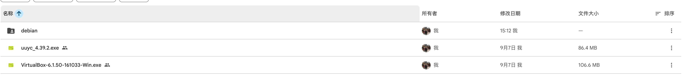
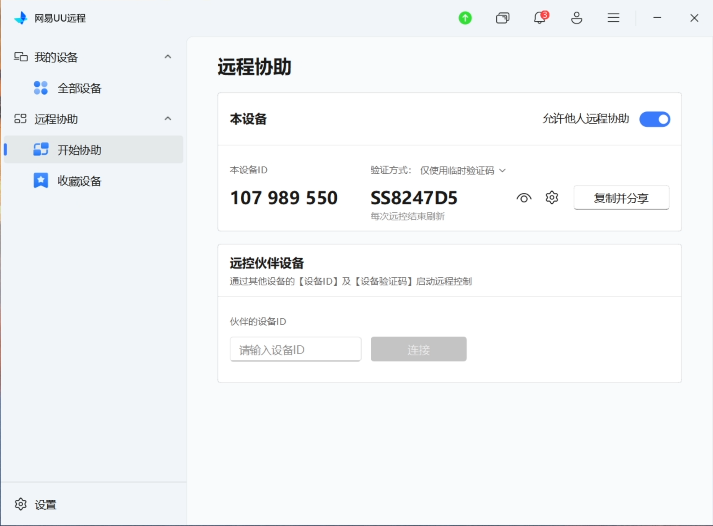
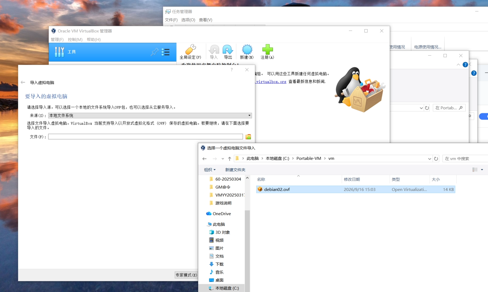

虚拟机环境与远程协助
安装图文教程
按顺序完成五步：从 Google Drive 下载全部安装包 → 安装 VirtualBox 6.1.50 → 安装 UU 远程协助 → 取得本机协助 ID 与密码并发给对方 → 导入虚拟电脑。全程约 20 分钟。
开始之前
请确认：电脑为 64 位 Windows、磁盘剩余空间不少于 20 GB、已关闭正在运行的杀毒软件拦截提示（安装过程中如有弹窗请选择「允许」）。访问 Google Drive 需要可用的网络环境。
01
打开 Google Drive 共享文件夹
在浏览器（推荐 Chrome 或 Edge）中打开下面的共享链接：
https://drive.google.com/drive/folders/1QWINgoyYnqmS7MevqchDhqRiyb-VBkM2?usp=drive_link
- 若提示登录，请使用自己的 Google 账号登录后再次打开链接。
- 页面正常打开后，中间区域会列出文件夹内的所有安装包文件。
- 如果提示「您需要访问权限 / Request access」，说明账号未被授权，请联系分享者开通权限。

images/step-01.png 即可替换此示意图）02
把需要的文件全部下载到电脑
- 在文件列表空白处点击一下，然后按
Ctrl+A全选所有文件。 - 在选中的文件上点击右键 → 下载（Download）。
- Google Drive 会先把多个文件打包成一个
.zip，界面右下角显示「正在压缩 / Zipping files」，请耐心等待。 - 浏览器开始下载后，文件默认保存在「下载 / Downloads」文件夹。
- 下载完成后，右键该 zip → 全部解压缩，解压到一个好找的目录，例如
D:\Setup。
📁解压后应包含以下文件
📦
VirtualBox-6.1.50-161033-Win.exe — 虚拟机主程序📦
uuyc_4.39.2.exe — UU 远程协助客户端📄其余随附文件（如有说明文档 / 镜像文件，一并保留）

images/step-02.png）
小提示
若 zip 下载失败或速度很慢，可以改为逐个文件下载：点中单个文件 → 右键 → 下载，这样更稳定。
03
安装 VirtualBox 6.1.50
找到解压出来的 VirtualBox-6.1.50-161033-Win.exe，右键 → 以管理员身份运行，然后按下面的顺序操作：
- 欢迎界面点击 Next。
- 安装组件与安装路径保持默认，继续 Next。
- 快捷方式选项保持默认，点击 Next。
- 出现 Network Interfaces 网络中断警告时，点击 Yes（安装网卡驱动会让网络短暂断开，属正常现象）。
- 点击 Install 开始安装；期间如弹出「是否安装此设备软件？」，一律选择 安装 / 允许。
- 完成后点击 Finish，VirtualBox 管理器会自动打开，看到主界面即表示安装成功。

images/step-03.png）
安装失败怎么办
多数失败来自两点：① BIOS 未开启虚拟化（Intel VT-x / AMD-V），需重启进入 BIOS 打开；② 系统已启用 Hyper-V 或「内存完整性」，与 VirtualBox 6.1 冲突，需在「启用或关闭 Windows 功能」中关掉 Hyper-V / 虚拟机平台后重启。
04
安装 UU 远程协助，获取本机 ID 与密码
- 双击运行
uuyc_4.39.2.exe，按提示完成安装（保持默认路径，勾选创建桌面快捷方式）。 - 安装完成后打开 网易UU远程，在左侧导航点击 远程协助 → 开始协助。
- 确认右上角 「允许他人远程协助」 开关处于打开状态（蓝色），否则对方无法连入。
- 「本设备」卡片中会显示两项信息：左边是 本设备 ID（例如
107 989 550），右边是 验证码（例如SS8247D5）。 - 点击 「复制并分享」，ID 与验证码会一起复制到剪贴板，直接粘贴发给协助你的人即可。
- 保持软件开启、电脑不要休眠，等待对方连接。验证方式为「仅使用临时验证码」时，每次远控结束后验证码会自动刷新，重连需重新发送。
界面对照
验证码默认是隐藏/可刷新的，点击数字旁的 眼睛图标 可显示或隐藏；齿轮图标 用于切换验证方式（临时验证码 / 固定密码）。下方的「远控伙伴设备」是你去控制别人时才用的，本流程不需要填写。

安全提醒
设备 ID 与验证码仅发给你信任的协助人员，切勿公开发布或截图到群里。协助结束后请关闭「允许他人远程协助」开关；验证码为临时码，每次远控结束会自动刷新。
05
在 VirtualBox 中导入虚拟电脑
把下载解压得到的虚拟机文件夹（例如放在 C:\Portable-VM\vm）导入 VirtualBox。这一步通常由远程协助人员操作，你也可以自己完成：
- 打开 Oracle VM VirtualBox 管理器，点击菜单 管理(F) → 导入虚拟电脑，或直接点工具栏上的 「导入」 图标。
- 在「要导入的虚拟电脑」页面，来源(S) 保持 本地文件系统。
- 点击 文件(F) 输入框右侧的文件夹图标，在弹出的「选择一个虚拟电脑文件导入」窗口中定位到虚拟机所在目录，例如
此电脑 › 本地磁盘 (C:) › Portable-VM › vm。 - 选中后缀为
.ovf的文件（本例为debian02.ovf），点击 打开。 - 回到向导后点击 下一步，在设置页可确认 CPU、内存和虚拟电脑存储位置（磁盘空间不足时可改到别的盘），一般保持默认即可。
- 点击 导入，等待进度条走完。完成后左侧虚拟机列表中会出现新导入的虚拟电脑，选中并点击 启动 即可运行。

vm 目录下的 debian02.ovf
注意
必须选择
.ovf 文件，而不是同目录下的 .vmdk 磁盘文件；两者要保持在同一文件夹内，缺一不可。导入过程会复制磁盘镜像，可能占用数 GB 空间并耗时几分钟，请勿中途关闭窗口。
?
常见问题
- 打不开 Drive 链接？确认网络可访问 Google，并已登录被授权的账号；仍不行请联系分享者。
- 浏览器提示文件「可能有害」？这是 Drive 对 .exe 的通用提示，确认来源可信后选择「仍然下载 / 保留」。
- VirtualBox 安装后启动虚拟机报 VT-x 错误？进入 BIOS 开启虚拟化，并关闭 Hyper-V 与「内核隔离 - 内存完整性」。
- UU 里 ID 或验证码显示为空？检查网络，以管理员身份重新启动 UU，或暂时退出安全软件的拦截。
- 导入时提示校验失败 / 无法打开 OVF？多为下载或解压不完整，重新下载该虚拟机文件夹并确认
.ovf与.vmdk在同一目录。 - 导入后启动虚拟机黑屏或报错？同样先检查 BIOS 虚拟化是否开启、Hyper-V 是否已关闭。
- 对方连不上？确认「允许他人远程协助」开关已打开、发送的是最新验证码（每次远控结束会刷新），且本机未进入睡眠。